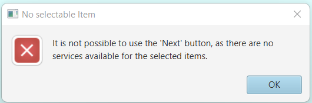

Trust-Able-App
Application Manual
- Author:
- Giovanni Cinel
- Cristian Bassotto
- Gianluca Nordio
- Anita Giacomin
Exam project: UE Trust Service.
Download and installation of Java
Follow the steps below to setup your device to use the application:
- For the correct launch and use of this application, it is necessary the latest version of Java (Java 18).
To check the version installed on the computer, open the Terminal and type: java -version
- If that is not the required version, please proceed to install it, following the instruction on the following link: Java 18
- If you are using windows, after having downloaded Java, you need to set a new path in the list of environment variables.
You can find the specification for the process here: how to set environment variables
Download and installation of the application
- Extract from the compressed folder its content. Open the new folder.
To open the application, choose the right .jar file (based on the system you are operating in) from:
- Trust-Able-App-Win.jar / Trust-Able-App-Lin.jar
- Double-click on the file to open the application. If this does not work, do the following process:
- open the terminal
- move to the directory where the file above is inserted in
- Execute the command:
- java -jar Trust-Able-App-Win.jar (for Windows)
- java -jar Trust-Able-App-Lin.jar (for Linux)
Unfortunately the executable file for MacOs has not been successfully produced because of our limited resources.
How to use the application
- Launching the application, the first visualized page is the nation page of the Research of Services tab.
If the launch goes wrong, because of the inability of the system to reach the API,
necessary to download the items of the search, or because there is an error with the loading of the graphic interface,
the application launches an error, shown to the user as an alert.
-
The page is structured as follows:
- By moving to the next page without selecting any nation, the system is going to automatically select all nations and show all providers from all of them.
- If there is no selectable item in the page, the system signals the inability to continue the search with only the given parameters (in the form of an alert message):


There are four different tabs on the top of the page, each one gives a different type of research that the user can experiment.
Right below there are the two buttons Select All and Deselect All, that can select/deselect all items shown on the page. Next to them there is a search box that can search an item in the current page by typing in it (the search is dynamic, as it refreshes the content of the page at every typed letter).
The majority of the page is occupied by the box that contains all the items of the page that the user can search through. These are selectable (and deselectable) cards. Double-clicking on one of them, the display shows the country code and name of the nation.
At the bottom of the page, the number of the page we are in and a Next button that enables us to navigate through the different pages.
The provider page, the service type page and the status pages (the following pages after proceeding with the search by clicking Next) are all structured as above, with the exception that the section that contains all items shows all the new parameters divided in sections, designated by the selected boxes in the previous pages, and the button Previous also on the bottom of the page. Same goes for the first three pages of the Research of Status tab.
The only thing that differs is in the status page: the box of the status contains a link. This link opens the page that describes the service status in depth. In the example below, we can see the division of the items of the page( in this case the status), first by nation, then by provider and last by service type (granted is in fact a link):


-
We can see the same display on the left and the same tabs on the top of the page. The main pane is empty and the search bar is now extended. The user can select which type of parameter to search for using the selector right next to the Search button. The search is done by typing in the search box the wanted item and pressing the button on the right. The pane should be showing the results of the search. If there are no items with the given name, the pane is going to stay empty.
- At first, the newly opened tab is just going to show the mode buttons:

-
Those give the user two different options on what to obtain from the search, the services or their status (the same division made in the first two panes).
- SEARCH OF SERVICE : the fillable parameters are nation, provider (by typed search) and service type and status (selector):
- SEARCH OF STATUS: the fillable parameters are nation, provider and service (all by typed search):
External libraries
-
The external classes used are the main java.util data structures and ADT, such as
java.util.ArrayList and java.util.List.
java.io.IOException is used in many files because it is a common exception thrown by many java classes.
For this project, in order to create the graphic part, we used JavaFx. It is a java library that uses a FXML (a markup language) to generate a graphical user interface (GUI). The FXML code was generated thanks to Scene Builder, a graphical tool used to simplify the implementation of the GUI.
import java.io.BufferedReader;
import java.io.IOException;
import java.io.InputStreamReader;
import java.net.MalformedURLException;
import java.net.URL;
import java.net.URLConnection;
java.net.URL AND java.net.URLConnection The abstract class URLConnection is the superclass of all classes that represent a communications link between the application and a URL. Instances of this class can be used both to read from and to write to the resource referenced by the URL. Creating a connection to a URL is done by invoking the openConnection() method on a URL. This method returns a connection object.
java.net.MalformedURLException: Thrown to indicate that a malformed URL has occurred. Either no legal protocol could be found in a specification string or the string could not be parsed.
java.io.InputStreamReader: An InputStreamReader is a bridge from byte streams (in our case obtained by UrlConnection) to character streams: It reads bytes and decodes them into characters using a specified charset.
Each invocation of one of an InputStreamReader's read() methods may cause one or more bytes to be read from the underlying byte-input stream. To enable the efficient conversion of bytes to characters, more bytes may be read ahead from the underlying stream than are necessary to satisfy the current read operation. For top efficiency, consider wrapping an InputStreamReader within a BufferedReader.
Each invocation of one of an InputStreamReader's read() methods may cause one or more bytes to be read from the underlying byte-input stream. To enable the efficient conversion of bytes to characters, more bytes may be read ahead from the underlying stream than are necessary to satisfy the current read operation. For top efficiency, consider wrapping an InputStreamReader within a BufferedReader.
java.io.BufferedReader: Reads text from a character-input stream, buffering characters.
java.io.IOException: Required as some of the imports above might throw an IOException.
import java.awt.*;
import java.net.URI;
import java.net.URISyntaxException;
java.awt.*: We import java.awt for the Desktop class. The Desktop class allows a Java application to launch associated applications registered on the native desktop to handle a URI or a file. Desktop class is able to launch the user-default browser to show a specified URI. We used it to open the state link on the default browser.
java.net.URI : Represents a Uniform Resource Identifier (URI) reference. It is similar to the URL class.
java.net.URISyntaxException: import used in order to handle exception launched by java.net.URI.
import org.controlsfx.control.CheckComboBox;
org.controlsfx.control.CheckComboBox : It is an external library that imports a specific box. ControlsFX is a graphic package similar to JavaFX that implements more specific and complex boxes. CheckComboBox is a ComboBox of javaFX with checkBoxes in the listview.
importjava.util.Comparator;
Comparator: interface that states the fact the class creates a comparison function, which imposes a total ordering on some collection of objects. It is usually used for sorting Java objects. Comparator compares two objects in a compare(Object1, Object2) format.
Design Patterns GoF
Singleton: we used singleton to create classes that should have only one instance and so it should not be possible to generate more than one.
Simple Factory: we used Simple factory in GetFromAPI because we obtain a different type of object created depending on the parameter used for the Generic Type.
Adaptee: because we translated the data passed from a GET request to the API to a collection of nation objects, each one containing many providers. Instead of having many providers not grouped. The Adaptee that does the translation is the class DataInitializer.
Composite: the box corresponds to the Composite, in fact you can do some operations on it, add a component to it, remove a component from it or get the children. The items correspond to the leaves. In fact you can only do a limited set of operations on it and it cannot have a child.